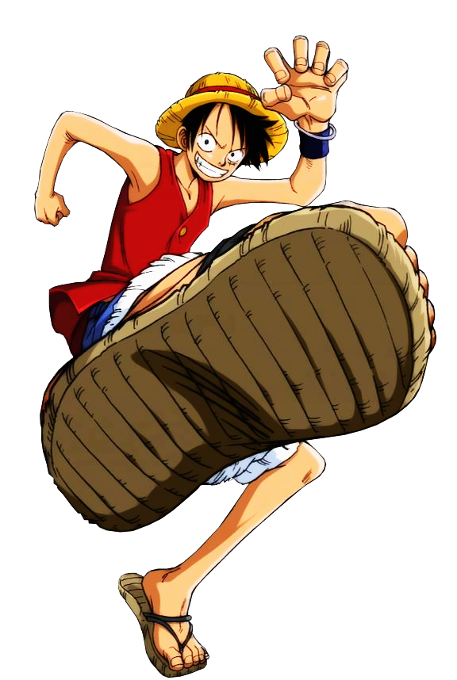
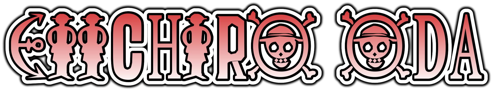

Eiichiro Oda
Ecritor e artista. Criador de One Piece.




Um pouco sobre Eiichiro Oda
Eiichiro Oda, escritor e artista dedicado desde a adolescência, Oda começou a trabalhar para a Shonen Jump da Shueisha aos 17 anos e atualmente se destaca como um dos mangakas mais proeminentes do mundo, ganhando cerca de 3,1 bilhões de ienes (US$ 23 milhões) por ano. Apesar de seu rigoroso cronograma de trabalho, ele mantém correspondência constante com os fãs (e o público em geral) por meio de entrevistas formais e canais informais, como suas colunas da SBS. Oda é casado com a ex-modelo, atriz, "Campaign Girl", "Race Queen" e "Gravure Idol" Chiaki Inaba (稲葉ちあき, Inaba Chiaki ) desde 7 de novembro de 2004; e juntos tiveram duas filhas; o primeiro dos quais nasceu em 2006 e o segundo em 2009.
Quando criança, Oda leu muitos mangás diferentes. Isso - junto com o hobby de pintura a óleo de seu pai - inspirou seu sonho de se tornar um mangaká, pois ele acreditava que eles ganhavam dinheiro sem fazer nenhum trabalho "real". Seu programa de televisão favorito era Vicky the Viking , um anime produzido na Europa que iniciou sua fascinação por piratas ao longo da vida.
Na quinta série, inspirado pelo best-seller da Weekly Shonen Jump, Capitão Tsubasa , ele se juntou ao clube de futebol de sua escola. Foi nessa época que a Jump começou a serializar Dragon Ball de Akira Toriyama ; ao ler seu segundo capítulo , Oda ficou instantaneamente encantado e seria fortemente influenciado pela arte de Toriyama e pela sensibilidade de contar histórias nos próximos anos.
Oda começou a desenhar mangá a sério por volta do segundo ano do ensino fundamental, desenvolvendo ideias e esboços para uma série de piratas que, muitos anos depois, se tornaria One Piece. Durante seu primeiro ano do ensino médio, ele optou por deixar o futebol para poder se concentrar totalmente no mangá.